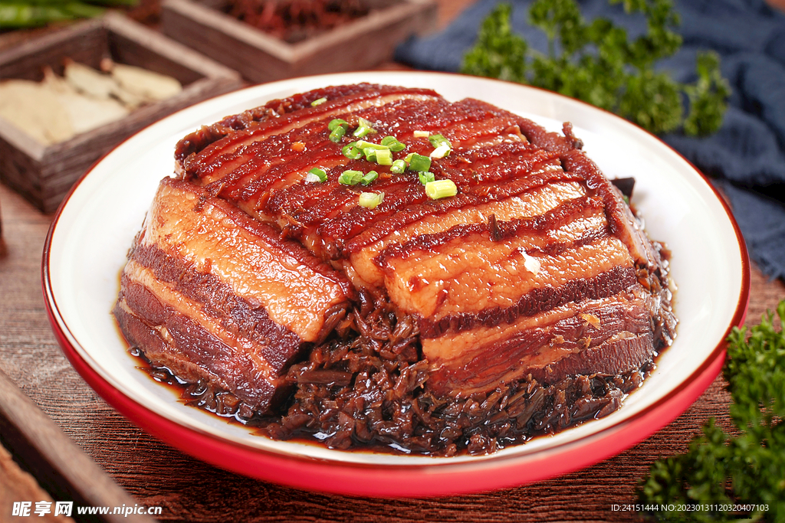
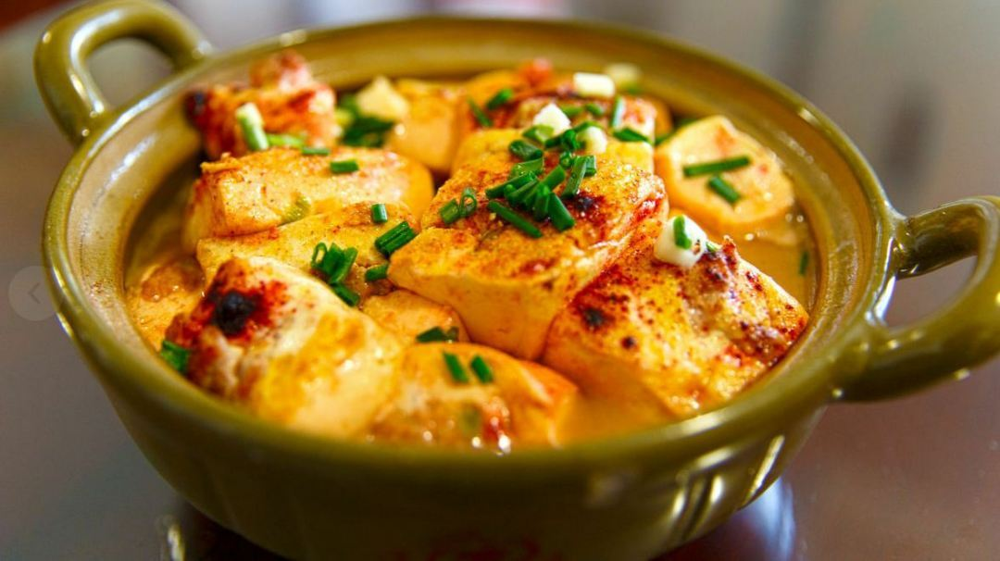

客家经典菜式
客家经典菜式承载着客家的历史和生活智慧，每一道菜都用料朴实、味道醇厚，是客家饮食文化的鲜活体现：

客家盐焗鸡
客家菜的招牌菜，选用本地走地鸡，用粗盐混合香料腌制后焗制而成。鸡肉皮脆肉嫩，咸香入味，带着淡淡的盐香和香料味，无需额外蘸料就能品尝到原汁原味的鲜美。

梅菜扣肉
客家宴席必备菜，选用肥瘦相间的五花肉，焯水后油炸，再和腌制好的梅菜一起蒸制。五花肉肥而不腻，梅菜吸满肉汁，咸香浓郁，搭配米饭食用格外下饭。

客家酿豆腐
客家菜的代表家常菜，将猪肉、香菇、葱花剁成馅料，塞入炸好的豆腐块中，再焖煮至入味。豆腐外香内嫩，馅料鲜香多汁，体现了客家“酿”菜的独特技艺。